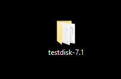

TestDisk es una utilidad para la recuperación de datos licenciada como software libre. Fue desarrollado principalmente para ayudar a recuperar datos perdidos en particiones y para reparar discos de arranque, problemas causados por software defectuoso, algunos tipos de virus o errores humanos. Para instalar este programa primero necesitamos descargarlo, por lo que pincharemos en TestDisk y descargaremos el programa para así poder seguir con la instalación.
Una vez lo hayamos descargado, lo primero que tendremos que hacer será descomprimir el archivo que se nos ha descargado en nuestro ordenador. Para descomprimir el archivo debemos de tener Winrar instalado. Haremos click derecho y le daremos a extraer ficheros. Podemos elegir el lugar en el que queremos extraerlos, en este caso, elegiré el escritorio.
En cuanto haya terminado de descomprimirse debería de aparecernos una carpeta en nuestro escritorio, haremos doble click para entrar en ella y buscaremos un archivo llamado testdisk_win.exe el cual ejecutaremos cuando queramos usar nuestro programa.